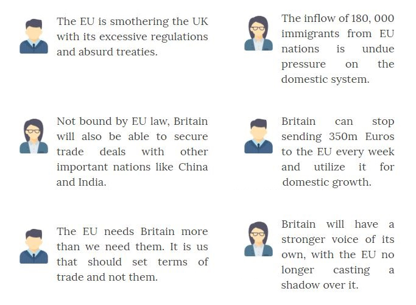
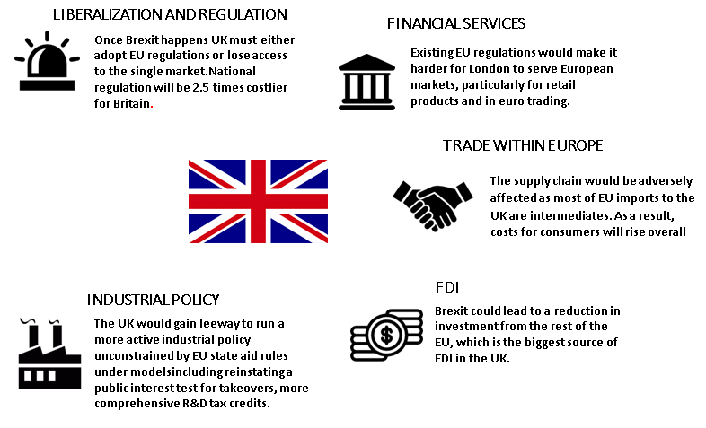
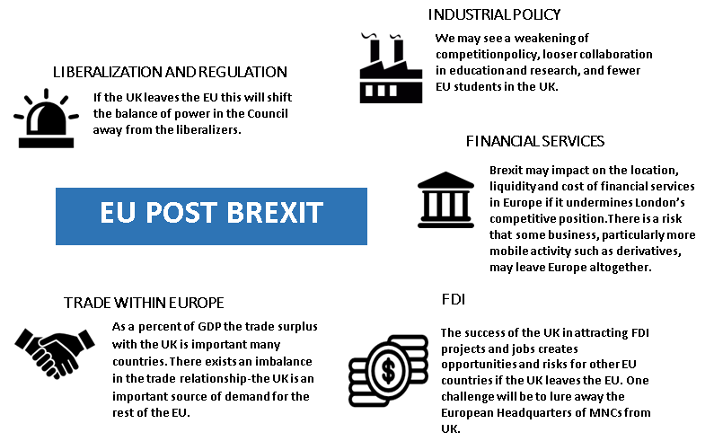
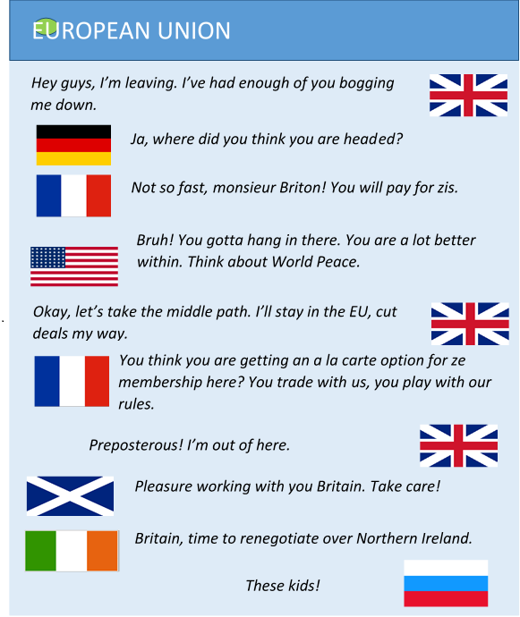

“…We are with Europe but not of it. If Britain must choose between Europe and the open sea, she must always choose the open sea…”
-Winston Churchill
On 23rd June, one of the biggest powerhouses in the world will be voting to determine whether they remain a part of a treaty they signed into, or will they finally part ways. The cry for Britain’s exit from the European Union has never been stronger, which means the vote this time is likely to announce the end of Britain’s presence in the European Union. Yes you guessed it right – Brexit is in fact the abbreviation for “British Exit”. The vote however is symbolic for far more than just the decision to stay or leave, it’s about power and freedom and David Cameron will definitely be holding his breath until the results are out. The referendum might just be limited to Britain but the tremors will clearly be felt throughout the world. Here’s your guide to how and to what extent the European Union and Britain will be affected.
How did the issue come up?
The Brexit debate has been raging since January 2013, when David Cameron, the Prime Minster of the United Kingdom promised that, should the Conservatives win a parliamentary majority at the 2015 general election, the UK Government would negotiate more favourable arrangements for continuing British membership of the EU, before holding a referendum as to whether the UK should remain in or leave the EU.The move was designed to stop members of his Conservative party from defecting to the United Kingdom Independence Party (UKIP), which pushes for separation from the bloc. Mr. Cameron strongly believes in the benefits of continued EU membership, but a handful of high-profile MPs in his party, pledged support for the “out” campaigners.
The European Union
The formation of the European Union (EU) had its origins after 1945, in the desire to tie Europe's nations so closely togetherthat they would never again wreak havoc on each other, as had happened during World War II.However, Britain has had an uneasy relationship with the European Union. In 1950, only 10% of Britain’s exports went to the six countries that formed the then European Coal and Steel Community (ECSC). In 1955, the ECSC decided to form the European Economic Community (EEC), the precursor of today’s EU. Concerned about sovereignty, Britain refrained from joining the EEC and instead, cajoled six much smaller European countries into forming the European Free-Trade Association (EFTA). Eventually impressed by the EEC’s superior economic performance, Britain joined it in 1973 under Edward Heath. Since then, British trade with other EU countries has risen drastically and presently, the EU takes over 51% of British exports. This is a clear indicator of Britain’s dependence on the EU for trade; and regardless of Brexiters’ whining and the result of the referendum, it establishes the EU as a key partner.
What do Brexiters have to Say?

The Element of Delusion in Brexit
The opinions that most Brexiters communicate to the public are strategies to garner votes, and are far from being pragmatic. Here are a few reality checks:
- Sovereignty is an illusion in a globalized world. Britain gives up sovereignty in exchange for clout through its memberships of NATO, the IMF and countless other power-sharing, rule-setting institutions.
- Despite being in the EU, Britain’s product and labor markets are among the developed world’s least regulated. This rubbishes the claim that the EU constantly regulates British affairs.
- Although Britain contributes to the EU budget by paying approximately 340 Euros per household, it is estimated that the gain is 3000 Euros for the same.
- If Norway and Switzerland (whose arrangements with the EU many Brexiters idolize) is a guide, the Union would also demand the free movement of people and a big payment to its budget.The access to the single large market will come at a cost which, the two parties will perhaps not be able to negotiate to the point of mutual benefit.
- Under the current circumstances, the UK is heavily dependent on the EU; the latter takes almost half of Britain’s exports, whereas Britain takes less than 10% of the EU’s. The British trade deficit is mostly with the Germans and the Spanish, not with the other 25 countries that would have to agree on a new trade deal. Moreover, the EU has 53 free-trade deals with various countries including the US, China and India, from which a post-Brexit Britain would be excluded. Britain would have to try to replicate them, a huge challenge, given the amount of time required to secure a trade deal.
- To some Euro sceptics, these hardships would be worth it in exchange for reclaimed sovereignty. After the European Communities Act 1972, EU laws were given priority over UK laws. Britain will regain its lost power. However, the gain would be partly illusory. Once outside the EU, Britain would still be conducting business with the EU where it would encounter more red tapism than it presently does.
What Impact on the UK will Brexit have?
Saying yes to Brexit will not mean that the country can exit the Union overnight. The separation will be a long, complicated and arduous process and might even take up to 2 years. Will Britain really benefit by leaving? Read on to find out.
- A decision to leave will be seen by many as a hostile and destabilizing act for a union that is already on its knees. The EU will be desperate to show that a decision to leave does not have a painless outcome and Britain might have to encounter unfriendly markets for a while.
- A Britain outside the Union would lose its vote and influence over the terms of its participation in the single market. Meanwhile, rival financial centers such as Paris and Frankfurt would seize the opportunity to establish rules that would help them win back business from London.
- It would imperil Britain’s security, when threats from terrorists and foreign powers are at their most severe in years, and the entirety of Europe is faced with one of the largest refugee crises. And far from reclaiming sovereignty, Britons would be forgoing clout, by giving up membership of a powerful club whose actions they can influence better from within than without.The European arrest warrant is a case in point. Set up in 2004, this EU-wide system to fast-track the extradition of dangerous criminals was used by Britain to seize a suspect in a failed follow-up to the 2005 London transport bombings who fled to Italy, and to haul a fugitive murderer back from Poland in 2012.
- Many believe that Brexit would lead to another referendum on independence by the Scottish, even though the first one maintained status quo. The Scottish National Party is campaigning to stay in and is known to be more pro-European.
- Brexit may trigger disputes between Britain and Ireland since their economic, trade and political relations depend heavily on both belonging to the EU. This helped underpin the peace process in Northern Ireland.
Economic Aspect:


| Impact on the United Kingdom | Impact on the Europian Union | |
|---|---|---|
| Trade within Europe | Regulatory divergence grows over time, increasing the cost of trade, impacting on volumes and the UK place in supply chains. | EU trade matters more for the UK than UK trade for the EU, but some states with big bilateral surpluses feel a macro chill from Brexit. |
| Foreign Direct Investment | The UK is less attractive as a gateway to Europe, as a base for corporate HQ's and as a location for investment from Europe. | Businesses find it difficult to relocate investment from the UK and there is a risk the UK attempts to undercut the EU on standards to attract FDI |
| Liberalisation and Regulation | The UK loses influence over EU regulation without gaining much freedom to regulate independently. | The balance in the European Council shifts away from liberalization and it becomes harder to form a blocking minority against illiberal measures. |
| Industrial Policy | The UK gains flexibilty over industrial policy, but loses the benefits from scale and influence in some areas. | There could be a weakening of competition policy, loser collaboration in education and research and impacts on public procurement. |
| Immigration | Immigration is tightened, damaging competitiveness, particularly of London, but how much depends on Brexit model. | Some countries are affected by the impact on diverted migration, with the extent of political contagion a big unknown. |
| Budget | The UK gains financially, but how much depends on the model, and variation of the net impact across the UK regions complicates Brexit politics. | The EU loses a budget disciplinarian and a majr net contributor, with the gap needing to be filled by higher contributions or less spending. |
Significant
Severe
The Big Picture
- Victory for Britain’s secessionists in the referendum would hand leverage to countries at the heart of the European project, Germany and France, who would drive a hard bargain to deter others from following the British out the door.
- Brexit would deal a heavy blow to Europe, a continent already on the ropes. It would uncouple the world’s fifth-largest economy from its biggest market, and unmoor the fifth-largest defense spender from its allies.
- The UK consistently ranks highly in international surveys of soft power and this is a source of influence for the EU. If the UK leaves the EU, this will not only diminish the bloc’s soft power assets, but also damage perceptions –and hence the soft power -of the EU itself.
- America has been the system operator of international order built on a strong, stable Transatlantic Alliance supported by the twin pillars of NATO and the EU. If Britain leaves the EU, America’s closest ally would be marginalized. Europe would be poorer without Britain’s voice: more dominated by Germany; and, surely, less liberal, more protectionist and more inward-looking. The whole European project at risk of unraveling at precisely the time new economic and security threats confront the West.
- Faced with a rising China, a declining but risk-inclined Russia, and the turmoil in the Middle East, close transatlantic cooperation will be crucial to maintaining a liberal international order over the long term. Brexit, by weakening both Europe and Britain, would make a disorderly international system more likely.
- The EU has become an increasingly important part of the West’s foreign and security policy, whether it concerns a nuclear deal with Iran, the threat of terrorism or the imposition of sanctions against Russia. Without Britain, it would be harder for the EU to pull its global weight—a big loss to the West in a troubled neighborhood, from Russia through Syria to north Africa. It is little wonder that Russia’s Vladimir Putin is keen on Brexit—and that America’s Barack Obama is not. It would be shortsighted for Euro sceptics to be indifferent to this.
The information you have soaked in from the article must have given you a mixed feeling. On one hand Brexit will empower Britain and give it more freedom to operate through its own ways but on the other it will lose out on the political front; hard policies from EU against Britain may cripple its trade relations. For EU there seems to be a greater downside if Brexit does happen, as it will lose the power of influence that came with Britain along with most of its soft power. However, the EU could be able to maintain most of its trade success, but it will be a big loser on the world scale as its ability to pull off defense related deals and sanctions will be reduced substantially. The following is an illustration of the dynamics that the Brexit deals with:

While there seems to be plenty of reasons for members of the EU to be worried there is the curious case of Germany that might not be too unhappy considering it would acquire centre stage at the EU and be able to pull a lot more weight. Also Russia would be keen to see the EU collapse post Brexit, while USA will be very unhappy with an exit as they would stand to lose their greatest ally in Europe. Overall, the referendum will be a highly watched one.